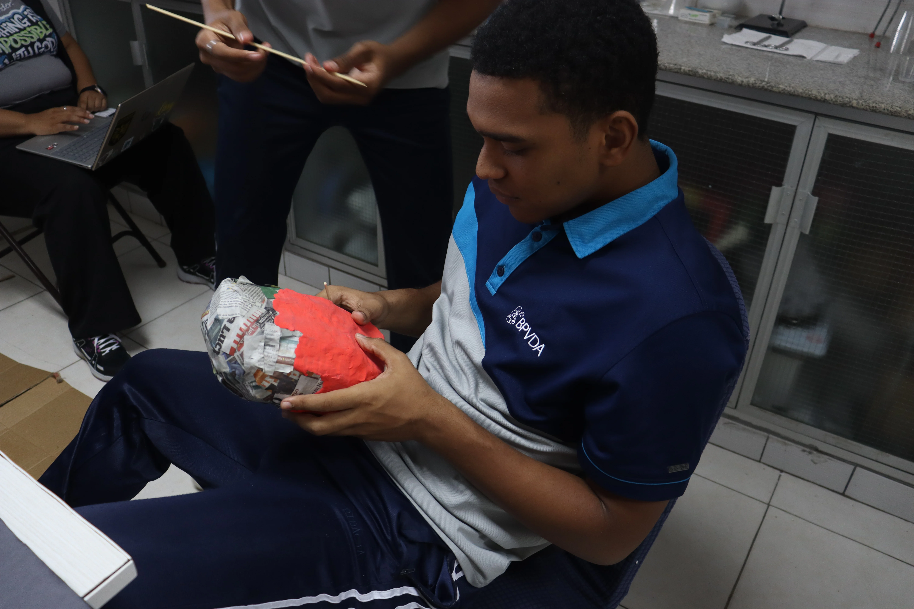
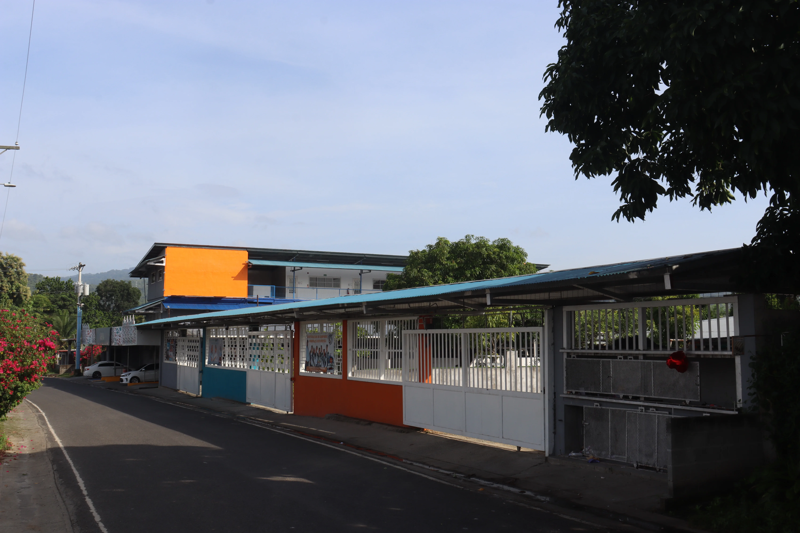

02 Enfoque Educativo
Innovación activa para aprender y liderar.
Conectamos a nuestros estudiantes con entornos interactivos, metodologías prácticas y tecnologías que potencian su desarrollo integral.
Exploración Visual
Momentos que inspiran.
Desliza para explorar la riqueza visual de nuestra comunidad educativa.


+30
Años de Historia
Formando líderes y ciudadanos comprometidos en la 24 de Diciembre.
100%
Docentes Especializados
Capacitación constante en pedagogía moderna y valores cristianos.
5
Niveles Integrados
Ruta continua desde Maternal y Prekínder hasta Bachillerato.
24/7
Ecosistema SAI
Plataforma digital para calificaciones, agenda y comunicación familiar.

03
Ecosistema Digital
Herramientas que conectan a la familia.
A través del Sistema Académico Integral (SAI), padres y educadores comparten información en tiempo real para respaldar de manera oportuna el crecimiento de cada alumno.
- Acceso a boletines y evaluaciones desde el móvil.
- Notificaciones directas de eventos y avisos urgentes.
- Acompañamiento pedagógico seguro y estructurado.
Vida Estudiantil
Experiencias que potencian el talento
Actividades complementarias diseñadas para forjar el carácter, la destreza y la vocación de servicio.
Ciencia y Experimentación
Proyectos prácticos de laboratorio que invitan a observar, formular hipótesis y contrastar resultados con rigor científico.
Oratoria y Liderazgo
Espacios de desarrollo oral y argumentativo para comunicar ideas con respeto, persuasión y convicción moral.
Servicio y Comunidad
Iniciativas de ayuda solidaria donde los estudiantes ponen sus dones al servicio de quienes más lo necesitan en Panamá.
Ciclo Escolar 2026
Forma parte de nuestra comunidad educativa
Consulta los requisitos para nuevo ingreso o renovación de matrícula y reserva la plaza de tu hijo hoy mismo.